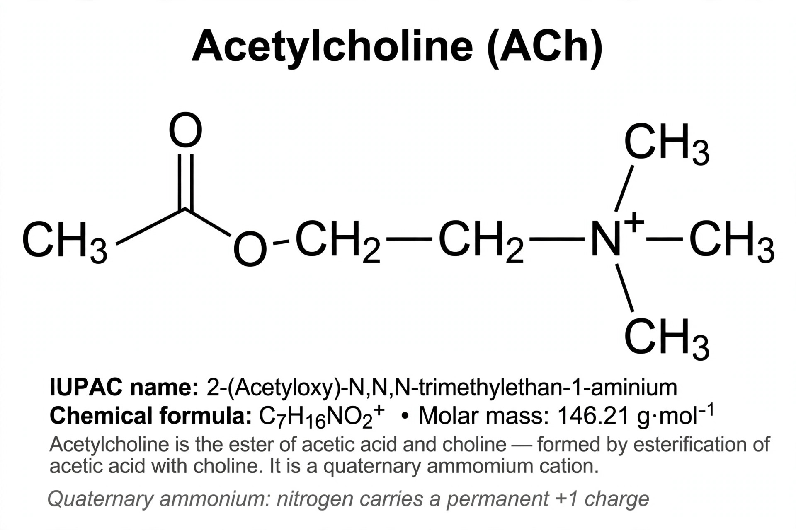

Acetylcholine
| Acetylcholine | |
|---|---|
 | |
| IUPAC name | 2-Acetoxy-N,N,N-trimethylethanaminium |
| Formula | C7H16NO2+ |
| Role | Neurotransmitter at neuromuscular junctions, autonomic ganglia, and in the CNS |
| Receptors | Nicotinic and muscarinic acetylcholine receptors |
Acetylcholine (ACh) is an organic chemical that functions in the brain and body of many animals (including humans) as a neurotransmitter — a chemical message released by nerve cells to send signals to other cells, such as neurons, muscle cells and gland cells. Its name derives from its chemical structure: it is an ester of acetic acid and choline. Acetylcholine was the first neurotransmitter to be identified.
Function
Acetylcholine is the neurotransmitter used at the neuromuscular junction: motor neurons release it to activate skeletal muscle fibres, causing contraction. It is also the transmitter at autonomic ganglia, at parasympathetic postganglionic synapses (slowing the heart, stimulating digestion and glandular secretion), and at sympathetic synapses onto sweat glands. In the central nervous system, cholinergic neurons of the basal forebrain and brainstem modulate attention, learning, memory and arousal; degeneration of these neurons is associated with Alzheimer's disease, and drugs that inhibit acetylcholinesterase — the enzyme that breaks acetylcholine down — are used to treat its symptoms.
Synthesis and breakdown
Acetylcholine is synthesised in nerve terminals from choline and acetyl-CoA by the enzyme choline acetyltransferase. It is packaged into synaptic vesicles and released by exocytosis when an action potential opens voltage-gated calcium channels. In the synaptic cleft it binds either ionotropic nicotinic receptors (ligand-gated ion channels, found at neuromuscular junctions and autonomic ganglia) or metabotropic muscarinic receptors (G protein-coupled receptors M1–M5). Signal is terminated by acetylcholinesterase, one of the fastest enzymes known, which hydrolyses acetylcholine to acetate and choline; the choline is taken back up into the terminal for reuse.
History
Acetylcholine was identified in ergot extracts by Henry Dale in 1914. In 1921 Otto Loewi demonstrated chemical neurotransmission by showing that stimulating the vagus nerve of a frog heart released a substance ("Vagusstoff") that slowed a second heart — the substance was acetylcholine. Dale and Loewi shared the 1936 Nobel Prize in Physiology or Medicine for discoveries relating to the chemical transmission of nerve impulses.
Pharmacology
Many drugs and toxins act on cholinergic signalling: nicotine and muscarine are receptor agonists; curare and α-bungarotoxin block nicotinic receptors at the neuromuscular junction; atropine blocks muscarinic receptors; botulinum toxin prevents acetylcholine release; and organophosphate insecticides and nerve agents (such as sarin) irreversibly inhibit acetylcholinesterase, causing fatal overstimulation. Flaccid paralysis also results when acetylcholine release from motor terminals fails, whereas sustained contraction in tetanus (physiology) reflects calcium dynamics within the muscle fibre itself.